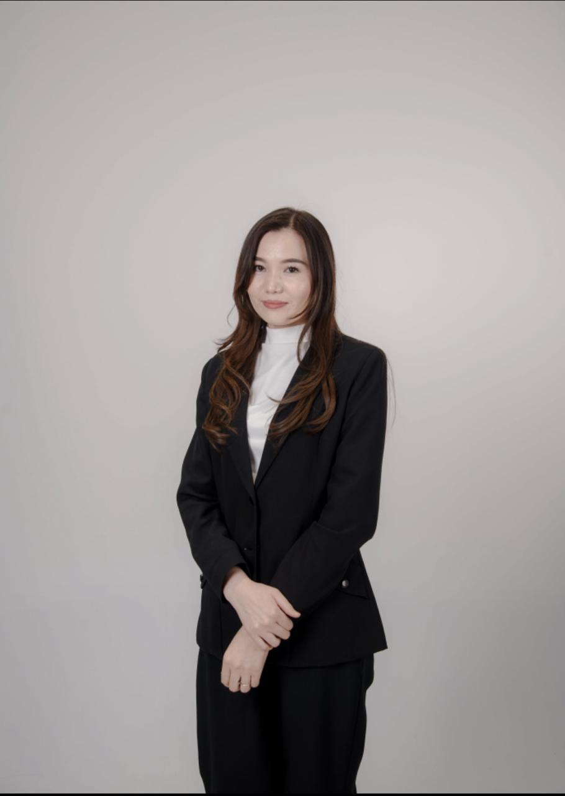

География пәні мұғалімі
Магистр, "Педагог-сарапшы"
Қазақстан Республикасының білім беру жүйесін Алғыс хат. Шымкент қаласының білім басқармасы. Жас ұрпаққа білім беру жолындағы адал еңбегіңіз бен сапалы жұмыс нәтижесін көрсеткені үшін "Алғыс хат". 2023ж
ІІ дәрежелі диплом. Жалпы білім беретін пәндер бойынша 9-11 сынып оқушыларына арналған Республикалық Олимпиаданың аудандық кезеңінің жүлдегері Сапар Аяулым. 2023ж. №А2023-0411
2024 ж ҰБТ нәтижелері
| Ануарбек Сарбиназ | 49 |
| Жылкельдиев Дінмұхаммет | 47 |
| Азат Диана | 46 |
| Оразбек Бейбарыс | 46 |
| Жүнісбек Арайлым | 46 |
| Абай Дильназ | 45 |
| Калданова Нурайым | 44 |
| Тұрғанбек Нұрдәулет | 42 |
| Сатимқұл Шыңғысхан | 41 |
| Сауқынбек Дінмұхамед | 41 |
| Серікбай Асылжан | 41 |
| Муса Ақерке | 41 |
| Нәліпбай Қасымжомарт | 40 |
Жалпы: 50 балл